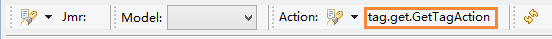

<get>
得到变量值
从作用域context或者session中得到变量， 可使用Ognl表达式得到变量的属性和方法，或者自定义ognl类型变量
value（必须） 得到变量值，也可以得到变量相关的Ognl值
valueScope（可选） 变量的作用域 属性 context:从context中得到变量（默认） session:从session中得到变量
case（可选） 字符串大小写转换，可以使用“|”包含多个操作，如 lower|plural 属性 lr:字符串转成小写（同lower） ur:字符串转成大写 （同upper） hlr:头字母转成小写 （同headLower） hur:头字母转成大写（同headUpper） lower:字符串转成小写 upper:字符串转成大写 headLower:头字母转成小写 headUpper:头字母转成大写 plural:复数格式 singular:单数格式
trim（可选） 是否保留输出值的前后空白字符 属性 false:保留输出值的前后空白字符（默认） true:删除输出值的前后空格（包括换行符）
以下的方式都可以输出"Hello Jmr!"，四种方式本质上都是转换成out.write(Object object)
输出的值：
基本类型：输出的值是它们本身； 字符串：输出的是字符串； Object：输出toString()方法的返回值。
用<get>得到它们的值

输出结果可以看到，List和array调用了toString()方法， array因为没重写toString()方法，所以返回的是一个地址。
小贴士：在<get>的value中，把鼠标放在上面，或者选中，可以提示出这个变量的值。

1.在context中设置变量，作用域为当前任务，变量只能在当前任务下的模板和action中共享。
此处在模板的<% %>中设置context的值，当然，也可以在action中设置context, 这里设置了String、boolean、int和List类型的变量。

用<get>得到它们的值

输出结果

小贴士：在<get>的value中按提示键可以提示出可用的变量值。

2.在session中设置变量，作用域跨任务，变量能在多个任务的模板和action中共享。
此处在模板的<% %>中设置context的值，当然，也可以在action中设置session, 这里设置了String、boolean、int和Map类型的变量。
用<get>得到它们的值，作用域valueScope输入session

输出结果

小贴士：在<get>的value中按提示键可以提示出可用的变量值， 此处会根据作用域提示对应的变量。

3.在action中设置变量
在action中可以设置context或者session变量，此处我们设置context变量为例。 这里设置了String、boolean、int和double[]类型的变量。
用<get>得到它们的值

输出结果

小贴士：在<get>的value中按提示键可以提示出可用的变量值， 此处提示需要在模板的菜单中选中需要的action。


4.在<set>、<for>等标签的var变量。
在set、for中设置的变量本质上也是设置在context或者session中。

用<get>得到它们的值，其中list用for标签循环输出，分隔符用","

输出结果

get不仅可以获得变量值，还可以得到变量的Ognl属性和方法的值
以下是一个Student类，它有id和name这2个属性

在action中new一个Student对象

把模板中的action指向GetTagAction
可以得到对象的ognl values 和ognl methods
Ognl values:对象的属性如果有对应的getXXX()方法， 就可以得到它本身 student有id和name，因为id和name有对应的getId和getName方法，所以可以得到它们的Ognl值。 Ognl methods:对象的方法 对象包含的方法，如果方法有返回值，可以得到返回值。
不仅得到对象的Ognl值，还可以链式的得到其对应的Ognl值。 如student.name为String类型，所以还可以得到name对应的String方法。
用<get>得到它们的值。

输出结果
小贴士：在<get>的value的中，把鼠标放在上面，或者选中，可以提示出这个变量的Ognl值。
鼠标放在上面

选中需要的部分

case能对得到的值进行大小写和单复数转换。
在很多时候，需要对得到值进行大小写转换，头字母大小写转换，或者单复数转换。此时可以使用case 以下例子中，我们设置一个变量class，首先我们要把class的头字母转换成大写，并且转成复数形式。 所以在case中输入"headUpper|plural"，其中可以用“|”包含多个操作。 而id和name只是在它的get方法中把头字母转成大写即可。

结果

trim是判断是否保留输出值的前后空白字符，默认false，也就是说原样输出所有字符。
例子
结果